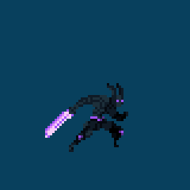

Featured Interactive Projects

Whack a Mole
A fast-paced browser game where players test their reflexes by whacking moles as they pop up. Features fun graphics and sound effects.
Play Whack a Mole
The Witcher Family Tree
An interactive family tree visualization for The Witcher universe. Explore character relationships and lore in a visually engaging way.
View Family Tree

Story Website
An interactive narrative website telling the story "Family Bone Breaking" - a personal tale of an e-bike accident and recovery, complete with images and structured storytelling.
Read Story